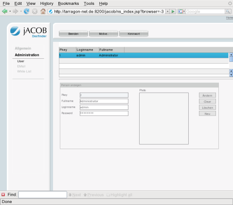

About the Open-jACOB Herb ApplicationNow, more than ever, enterprise applications need to support multiple types of users with multiple types of interfaces. For example, an online store may require an fancy HTML front for Web customers, a WML front for wireless customers, a Open-jACOB web interface for administrators, and an XML-based Web service for suppliers (also provided by Open-jACOB).Enterprise edition feature list:
|

Contact: info AT openjacob DOT org
|